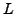
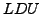
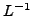
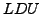
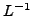

In [3] a factorized approximate inverse preconditioner
(AISM) based on the Sherman-Morrison formula is presented. In this work
the structure of the factors is analyzed and it is proved that the  and
 factors of the  factorization of a matrix are easily retrieved from
one of them.
Moreover columns of and  are computed in the same step which makes
the application of dropping strategies proposed in [2] straightforward
in the case of a symmetric positive definite coefficient matrix.
factors of the  factorization of a matrix are easily retrieved from
one of them.
Moreover columns of and  are computed in the same step which makes
the application of dropping strategies proposed in [2] straightforward
in the case of a symmetric positive definite coefficient matrix.
Numerical experiments on a set of symmetric positive definite matrices are done showing that this strategy, that we called Balanced Incomplete Factorization (BIF for short), is very robust for preconditioning very ill-conditioned problems using iterative methods. In addition BIF exhibits shorter setup times than RIF [1], a method of a similar and very high level of robustness.